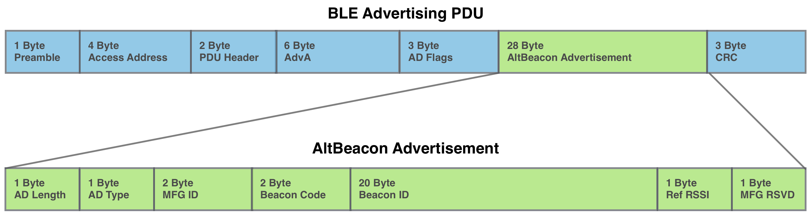
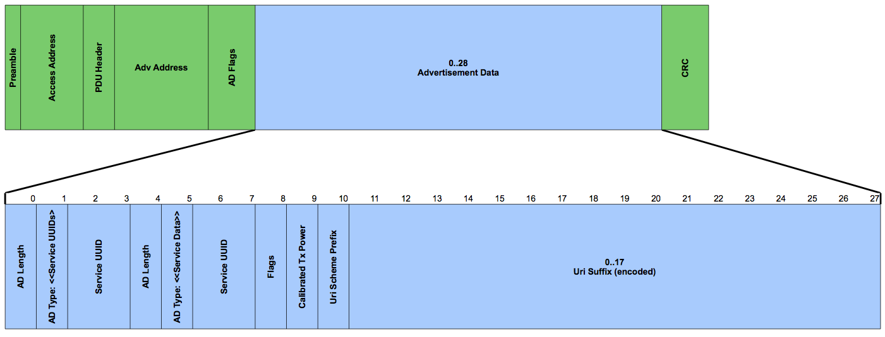
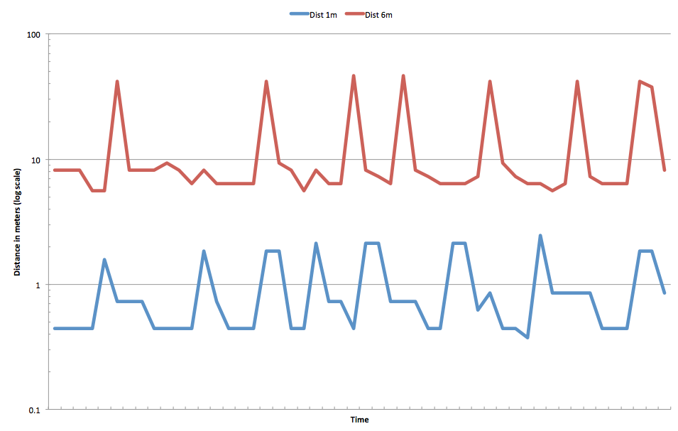
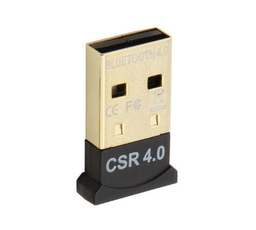

Barry Byford
@uk_baz
Bluetooth Low Energy (BLE), officially known as "Bluetooth Smart"
A light-weight subset of classic Bluetooth which was introduced as part of the Bluetooth 4.0 core specification
Uses BLE's advertising feature
Transmit only
Contains small amount of information
A number of different 'standards' for this information
Apple’s iBeacon was the first BLE Beacon technology to hit the headlines.
The iBeacon is a proprietary, closed standard.
The large ecosystem and pool of resources around iBeacons for developers is only available after signing Apple’s developer license.
AltBeacon is a free open-specification for beacons designed by Radius Networks.
The AltBeacon has the same functionality as that of an iBeacon and seems to be a direct response to the closed source iBeacon spec
It looks to be gaining some momentum although it is not that widely supported yet

(pronounced YUR-ee-BEE-kun)
uriBeacons is an open project that is backed by Google
as part of their Physical Web initiative.
Beacon payload is an URI (either URL or URN)
URL's could open up some interesting possibilities especially for Raspberry Pi and IoT enthusiasts

https://github.com/google/uribeacon/tree/master/specification
UriBeaconScanner.on('discover', function(uriBeacon) {
console.log('discovered UriBeacon:');
console.log(' uri = ' + uriBeacon.uri);
console.log(' flags = ' + uriBeacon.flags);
console.log(' TX power = ' + uriBeacon.txPower);
console.log(' RSSI = ' + uriBeacon.rssi);
console.log();
});
https://github.com/google/physical-web/blob/master/nodejs/basic-scanner.js
Proximity aware computing
Can be moving beacon
Or moving scanner

Easy to spot which is closest
Harder to spot exact location
You'll need a Bluetooth v4.0 dongle

Pi can be scanner or beacon